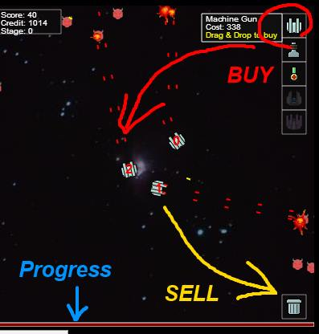

Serialized game text:
How to Play
This game requires only mouse to play.
- First, select a difficulty to start a game.
You can only select difficulty levels 0 and 1 at first.
The level 1 is actually too hard to start from, so selecting 0 is recommended.
- After the game has started, you can move the towers around by dragging & dropping.
- You can purchase additional towers by dragging from tower icons on the right side
of the screen.
Note that purchasing additional towers requires increasingly higher cost as the number of towers increase.
- You can also sell unnecessary towers by dragging & dropping one onto trash can on the right bottom.

- Towers gain experience and grow stronger as they kill enemies, so try to keep veteran
towers alive as long as possible.
- Tightly pack towers and surround weaker towers by stronger ones for better protection.
- The progress of the stage is displayed at the bottom.
- After a stage finishes, your towers status are automatically saved.
You can resume progress after restarting the browser.
- When you want to restart all over from the beginning, press the reset button.
The progress will be lost.
- You can also save the progress as a JSON text by pressing "get state" and copy
Serialized game text.